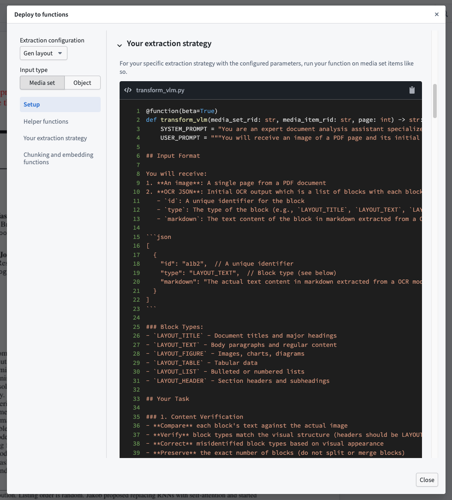

Follow the Deploy to functions guide in AIP Document Intelligence and use the generated code snippets to set up a Python functions repository with your extraction strategy.
To get started with document extraction in functions, first create a Python functions repository or use an existing one.
Set up the repository with the correct imports and permissions to run document extraction:
foundry-platform-sdk version >= 1.78.aip-workflows version >= 0.40.0.openai.The following sections explain the various code snippets included in the Deploy to functions guide.
Helper functions are the same for all extraction strategies. You can copy them into the same Python file as your function, or into a shared utilities file if you have multiple functions. They are available in-platform and included below for reference.
from dataclasses import dataclass
from time import sleep
from typing import Optional
from foundry_sdk import FoundryClient
from foundry_sdk._errors import PalantirException, PalantirQoSException, PalantirRPCException
from foundry_sdk._errors.palantir_qos_exception import QoSRetryHint
from foundry_sdk.v2.media_sets import models
from functions.api import function
@dataclass
class TransformResult:
"""The outcome of a transform. Functions return this instead of raising on failure so your
orchestration can branch on the result.
result: The extracted content (Markdown or JSON, depending on your configuration) on success,
otherwise None.
error: The specific error name on failure (or a human-readable reason for rate-limit and
availability errors), otherwise None.
retryable: True when the failure is transient (rate limits or service availability) and worth
retrying, False when it is not, and None on success.
"""
result: Optional[str]
error: Optional[str]
retryable: Optional[bool]
def _create_transform_job(
media_set_rid: str, media_item_rid: str, transformation: models.DocumentToTextTransformation
) -> str:
fc = FoundryClient()
job_initiation_resp = fc.media_sets.MediaSet.transform(
media_set_rid=media_set_rid,
media_item_rid=media_item_rid,
transformation=transformation,
preview=True,
)
job_id = job_initiation_resp.job_id
return job_id
def _is_transform_finished(media_set_rid: str, media_item_rid: str, job_id: str) -> bool:
fc = FoundryClient()
status = fc.media_sets.MediaSet.get_status(media_set_rid, media_item_rid, job_id, preview=True)
return status.status in ("SUCCESSFUL", "FAILED")
def _get_transform_result(media_set_rid: str, media_item_rid: str, job_id: str) -> str:
fc = FoundryClient()
result = fc.media_sets.MediaSet.get_result(media_set_rid, media_item_rid, job_id, preview=True)
return result.decode("utf-8")
def _run_transform_blocking(
media_set_rid: str, media_item_rid: str, transformation: models.DocumentToTextTransformation
) -> str:
job_id = _create_transform_job(media_set_rid, media_item_rid, transformation)
while not _is_transform_finished(media_set_rid, media_item_rid, job_id):
sleep(0.5)
return _get_transform_result(media_set_rid, media_item_rid, job_id)
def _run_transform_error_handled(
media_set_rid: str, media_item_rid: str, transformation: models.DocumentToTextTransformation
) -> TransformResult:
try:
result_text = _run_transform_blocking(media_set_rid, media_item_rid, transformation)
return TransformResult(result=result_text, error=None, retryable=None)
except PalantirQoSException as e:
retryable = e.retry_hint != QoSRetryHint.DO_NOT_RETRY
return TransformResult(result=None, error=e.reason, retryable=retryable)
except PalantirRPCException as e:
return TransformResult(result=None, error=e.name or type(e).__name__, retryable=False)
except PalantirException as e:
return TransformResult(result=None, error=type(e).__name__, retryable=False)
This function corresponds to your extraction strategy and requires a media input and a given page. Because the function is dynamically generated, copy the code from inside the app. Whatever name you publish it under will be registered, so you can rename it as needed. You can provide the media input as a media set and item RID string combination or as an object property; use the selector in the top left to choose the template. The object property template requires you to import your object.

Optionally, chunk extracted text and generate embeddings for downstream use in search or retrieval workflows. The functions below are static; the chunk size, chunk overlap, and embedding model are configured in the app, so replace the default parameter values with the ones you selected.
from functions.api import function, Array, Boolean, Float, Integer, String
from aip_workflows.document_intelligence.transforms import DocumentChunker
@function(beta=True)
def chunk_text(
texts: Array[String],
chunk_size: Integer = 8192,
chunk_overlap: Integer = 0,
concat_before_chunk: Boolean = False,
chunk_mode: String = "markdown",
) -> Array[Array[String]]:
"""
Chunks a list of text strings.
Args:
texts: A list of text strings to chunk.
chunk_size: Maximum number of characters per chunk.
chunk_overlap: Number of overlapping characters between consecutive chunks.
concat_before_chunk: If True, concatenates all texts into a single string before chunking,
returning a single inner list. Recommended when input is per-page text of a document.
If False, chunks each text independently, returning one inner list per input text.
chunk_mode: The chunking strategy to use. Options:
- "markdown": Recommended for Markdown text.
- "recursive": Recommended for raw text without any format.
Returns:
A list of lists of chunk strings. Each inner list contains the chunks for one input text.
When concat_before_chunk is True, input texts are concatenated into a single string so the
output list has length of 1.
"""
chunks = DocumentChunker.create_chunks(
texts,
chunk_mode=chunk_mode,
chunk_size=chunk_size,
chunk_overlap=chunk_overlap,
strip_markdown=True,
concat_before_chunk=concat_before_chunk,
)
if concat_before_chunk:
return [chunks]
return chunks
from foundry_sdk.v2.language_models.utils import (
get_foundry_token,
get_openai_base_url,
get_http_client,
)
from openai import OpenAI
@function(beta=True)
def embed_text(
texts: Array[String],
embedding_model_rid: String = "<YOUR_EMBEDDING_MODEL_RID>",
) -> Array[Array[Float]]:
"""
Generates embeddings for a list of text strings using the configured embedding model.
Args:
texts: A list of text strings to embed.
embedding_model_rid: The RID of the embedding model to use.
Returns:
A list of vector embeddings, one per input text.
"""
client = OpenAI(
api_key=get_foundry_token(preview=True),
base_url=get_openai_base_url(preview=True),
http_client=get_http_client(preview=True),
)
response = client.embeddings.create(
input=texts,
model=embedding_model_rid,
)
return [response.data[i].embedding for i in range(len(texts))]